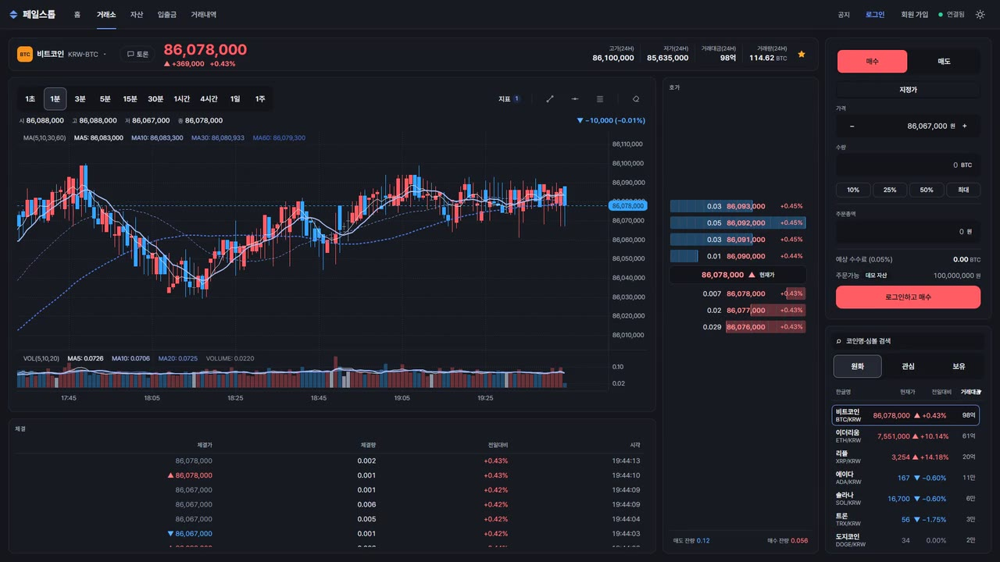
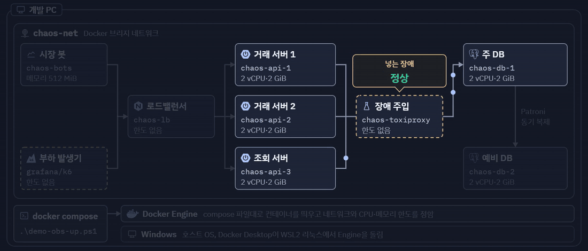
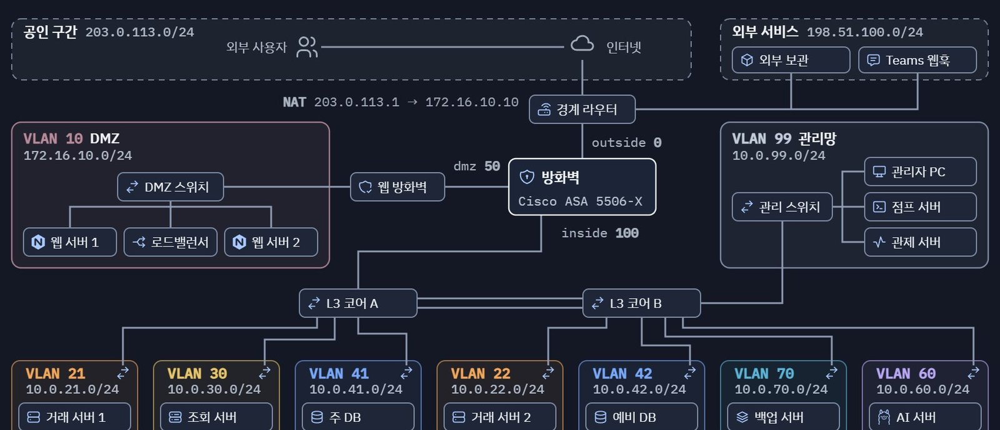
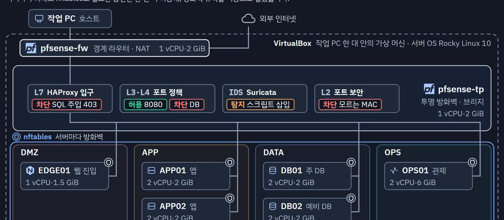
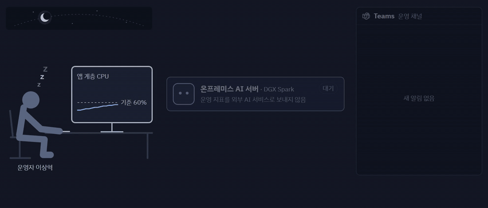
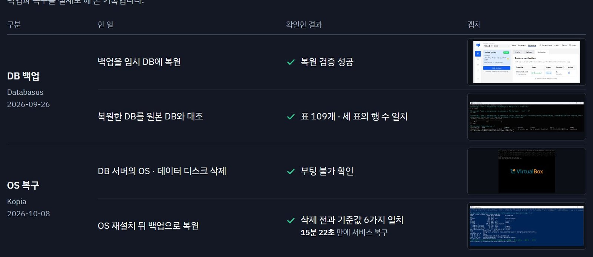
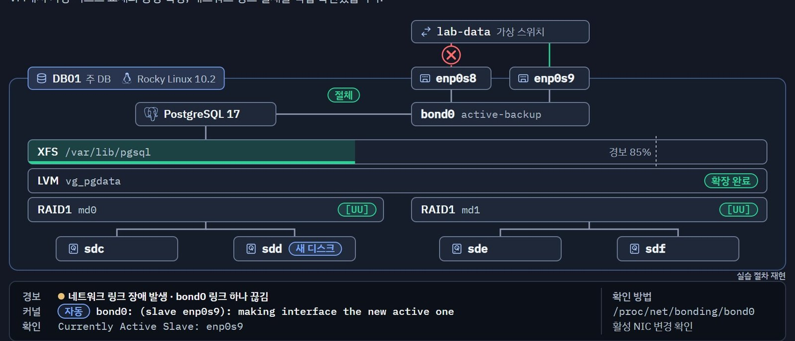
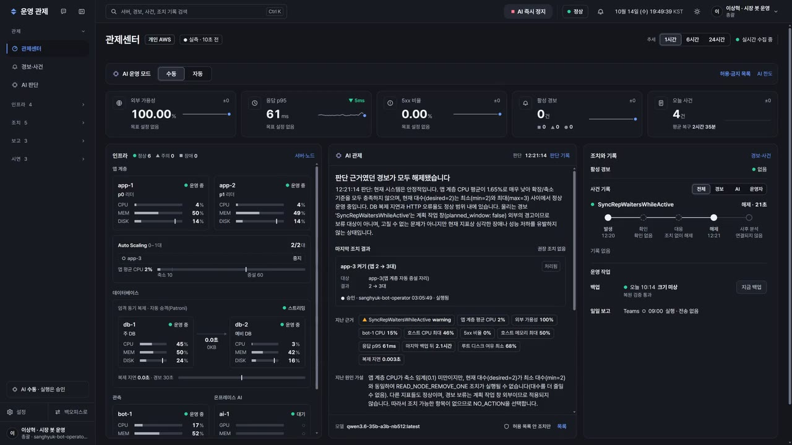
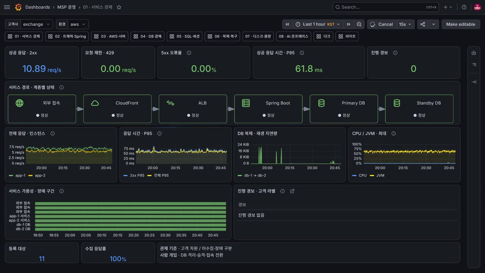

– · 1인 프로젝트 · 인프라 · 백엔드
failstop
모의 거래소를 AWS에 이중화하고, DB 장애와 부하를 시험했습니다.
- 기간
- 2026년 7월 – 10월
- 형태
- 1인 프로젝트. Claude·Codex를 함께 썼고, 설계 결정은 직접 했습니다.
- 기술
- AWS · Linux · PostgreSQL · Patroni · HAProxy · pfSense · Prometheus · Grafana · Java · Spring Boot
- 자료
- GitHub 저장소 · 발표 자료 · 시연 영상 7분
- 관련 기록
- 비동기 복제에서 확인받은 쓰기 122건 중 36건이 사라졌습니다
/api 504 진단: 가상 스레드와 HikariCP 라이브락
DB 백업을 서버 밖에 보관하고 복원까지 확인했습니다
서버 설정을 그대로 두는 pfSense 투명 방화벽 전환
nftables 규칙 중앙 관리와 90초 자동 되돌리기
주 DB 전원을 바로 끊었을 때: 승격 23.0초, 유실 0건

개요
운영 대상은 직접 만든 모의 거래소입니다
이 거래소를 운영 대상 서비스로 두고 인프라를 구성했습니다. 제 PC의 Docker에서 장애 시험을 먼저 하고, Packet Tracer로 망을 설계하고, 가상 머신으로 서버를 다시 구성한 다음 AWS로 옮겼습니다.
사용자와 봇이 같은 주문 API로 주문을 넣으면 Java 매칭 엔진이 체결하고, 결과는 PostgreSQL 원장에 남습니다. 서버가 죽거나 DB가 끊겨도 주문 기록과 잔고가 어긋나지 않게 하는 데 가장 공을 들였습니다.
| 일부러 낸 장애 | 179회 | 제 PC의 Docker에서 시험했고, 서버 이어받기와 DB 승격은 모두 30초 안이었습니다. |
|---|---|---|
| 주 DB가 꺼지고 예비 DB가 넘겨받기까지 | 23.0초 | AWS 서울 리전에서 주 DB 전원을 끊어 본 결과입니다. |
| CPU 경보부터 조회 서버 합류까지 | 4분 44초 | AI 제안을 승인하고 67초 뒤 조회 서버가 합류했습니다. |
| 한 달 예상 운영비 | 36.7만 원 | 세금 포함, 예산 40만 원 이내입니다. |
진행 단계
로컬 Docker에서 AWS까지, 네 단계
- 1단계 · Docker · 로컬 Docker 시험: Docker로 거래소를 띄우고 장애와 부하를 넣어 봤습니다.
- 2단계 · Packet Tracer · 네트워크 설계: Packet Tracer로 필요한 통신만 허용하도록 망을 설계했습니다.
- 3단계 · 가상 머신 · 가상 머신 구성: 가상 머신에 서버 여섯 대를 올려 방화벽과 백업을 구성했습니다.
- 4단계 · AWS · AWS 배포: 두 가용 영역에 나눠 배포하고, DB 장애와 서버 증설을 시험했습니다.
AWS 구성 · 서울 리전
거래 서버와 DB를 두 가용 영역에 나눠 배치했습니다
2026년 10월에 운영한 구성입니다. 장면을 고르면 주문 처리, DB 장애, 서버 증설 때의 흐름을 볼 수 있습니다. 발표 후에는 비용이 나가지 않게 자원을 모두 정리했습니다.
AI 서버와 Teams는 AWS 바깥에 있습니다. 처음 그린 구성도 보기

- 거래 서버와 DB는 두 데이터센터에. 가용 영역 두 곳에 한 대씩 나눠 두었습니다. 한쪽 서버가 멈추면 다른 쪽이 거래를 이어받습니다.
- 조회 서버는 평소에 꺼 둡니다. 부하가 올라갈 때만 켜지게 해서 상시 운영 비용을 줄였습니다.
- DB는 Patroni 엄격 동기 복제. 주 DB가 멈추면 같은 내용을 가진 예비 DB만 새 주 DB가 됩니다. 커밋을 확인해 준 주문은 예비 DB에도 남아 있습니다.
- 서버 접속은 SSM으로. SSH 대신 SSM으로 접속했고, 배포 파일은 S3에 올려 두었습니다.
장애 시험 · 제 PC의 Docker
AWS에 올리기 전에, 로컬 Docker에서 장애 시험을 179회 진행했습니다

| 장애 | 횟수 | 가장 오래 걸린 복구 |
|---|---|---|
| DB 연결 끊기 | 28 | 13.5초 |
| 거래 서버 강제 종료 | 48 | 12.9초 |
| 거래 서버 멈춤 | 28 | 13.4초 |
| 네트워크 끊기 | 17 | 11.1초 |
| 주 DB 강제 종료 | 15 | 27.0초 |
| DB 지연 등 그 밖의 시험 | 43 | — |
망과 방화벽 · Packet Tracer와 가상 머신
망을 구간별로 나누고, 계층마다 방화벽을 두었습니다
Packet Tracer로 먼저 망을 설계했습니다. 외부 웹 요청은 DMZ에서 받고 거래 서버와 DB는 내부망에 두었으며, 관리자도 점프 서버를 거쳐야 서버에 접속할 수 있게 했습니다. 가상 머신 실습망에서는 서버 설정을 바꾸지 않고 서버 앞에 투명 방화벽(pfSense 브리지)을 넣었습니다.


AI 관제 · 온프레미스 AI 서버와 Teams
경보가 울리면 AI가 원인을 정리하고 조치를 제안합니다

| CPU 경보가 울리고 Teams로 알림이 갑니다. | |
| AI가 지표와 서버 수, 최근 조치를 살펴보고 조회 서버를 한 대 늘리자고 합니다. | |
| AI가 제시한 근거를 확인하고 승인합니다. | |
| 승인하고 67초 뒤 조회 서버가 합류합니다. | |
| 경보가 풀리고, 장애 보고서가 Teams에 올라옵니다. |
- AI는 제안만 합니다. 서버를 바꾸는 일은 제가 승인해야 실행됩니다. 미리 허용해 둔 다섯 가지 조치에서 벗어난 제안은 코드가 먼저 걸러 냅니다.
- DB 전환은 AI에게 맡기지 않았습니다. 되돌리기 어려운 작업이라 Patroni의 페일오버 규칙에 맡겼습니다.
데이터 보존과 리눅스 운영
DB 장애와 OS 삭제 뒤에도 데이터가 남는지 확인했습니다
DB 전원을 끊었을 때 · AWS
0건. 끊기 직전에 확인해 준 주문 196건을 하나씩 대조했는데, 사라진 주문은 없었습니다.
OS를 통째로 지웠을 때 · 가상 머신
15분 22초. DB 서버의 OS와 데이터 디스크를 지우고, 다시 설치해 백업으로 되살리기까지 걸린 시간입니다. 따로 떠 둔 DB 백업으로 복원했을 때도 테이블 109개가 원래 DB와 모두 같았습니다.

평소에 해 두는 일 · Linux
- 앱은 로그인할 수 없는 전용 계정으로 돌립니다.
- 로그는 재부팅 뒤에도 남도록 디스크에 보관합니다.
- 방화벽 규칙을 잘못 넣으면 90초 뒤 저절로 되돌아갑니다.
- 디스크 여유가 15% 아래로 떨어지면 경보가 옵니다.
- 디스크 하나가 고장 나도 RAID1로 버팁니다.

주문 처리 · 백엔드
같은 주문을 여러 번 다시 보내도 주문은 하나만 생기게 했습니다
응답을 받지 못한 사용자는 같은 주문을 다시 보냅니다. 그때마다 새 주문이 생기면 안 되고, 들어갔는지 모르는 상태로 남아서도 안 됩니다. 그래서 주문 처리 경로를 네 단계로 나눴습니다.
POST /orders주문 API · 클라이언트가 만든 주문 키로 같은 주문을 알아보고, 내용이 다르면 거절합니다.command_journal명령 저널 · 엔진보다 먼저 DB에 커밋합니다. 리더 권한이 확인돼야 한 줄이 들어갑니다.engine매칭 엔진 · Spring도 I/O도 시계도 쓰지 않는 순수 Java라, 같은 명령이면 늘 같은 체결이 나옵니다.ledger원장과 잔고 · 금액은 BigDecimal과 NUMERIC(40,18)로만 다루고, 자산마다 원장 합계는 0이어야 합니다.
주문 키는 클라이언트가 만듭니다
client_order_id가 없으면 받지 않습니다. 서버가 키를 대신 만들면, 응답을 못 받고 다시 보낼 때마다 새 주문이 생길 수 있기 때문입니다.
같은 키면 내용을 비교합니다
요청 본문을 JCS(RFC 8785)로 정규화한 뒤 SHA-256 해시로 비교합니다. 필드 순서나 공백이 달라도 같은 주문이면 같은 값이 나옵니다.
엔진보다 저널에 먼저 기록합니다
명령을 command_journal에 커밋한 다음에야 엔진에 넘깁니다. 그래서 엔진이 처리한 명령은 빠짐없이 DB에 남아 있습니다.
커밋됐는지 모를 때는 DB에 다시 묻습니다
기록하는 순간 연결이 끊기면, DB 함수로 저널에 실제로 들어갔는지 확인합니다. 그래도 답을 못 받으면 503을 돌려주되 주문 키는 지우지 않습니다.
같은 키로 다시 보냈을 때 돌아가는 응답
| 상황 | 응답 |
|---|---|
| 같은 키, 같은 내용 | 200처음 만든 주문을 그대로 돌려줍니다 |
| 같은 키, 다른 내용 | 409duplicate_client_order_id |
| 앞선 요청이 아직 처리 중 | 409order_in_progress · Retry-After |
| DB에 닿지 못함 | 503Retry-After: 1 · 주문 키는 남겨 둠 |
POST /api/v1/orders
{"client_order_id":"c-0721-0001","market":"KRW-BTC","side":"bid", ...}
← 201 Created
응답이 오지 않아 같은 요청을 다시 보내면
← 200 OK X-Idempotent-Replay: true클라이언트는 응답을 받지 못하면 같은 키로 다시 보내면 됩니다.
리더와 원장 · 앱 서버 두 대 중 주문장 쓰기는 리더 한 대
잠깐 멈췄다 돌아온 옛 리더의 쓰기를 리스와 epoch로 막았습니다
리더만 기한이 있는 리스를 쥐고, 리더가 바뀔 때마다 epoch를 1씩 올립니다. 까다로운 건 잠깐 멈췄던 옛 리더가 자기가 아직 리더라고 믿고 쓰기를 이어 가는 경우였습니다. 그래서 권한을 확인하는 일과 쓰는 일을 나누지 않고, SQL 한 문장 안에 넣었습니다.
-- 저널에 쓰는 SQL, 일부만 옮김
INSERT INTO command_journal (...)
SELECT ...
FROM leader_lease
WHERE holder = :me
AND epoch = :epoch
AND lease_until > clock_timestamp()
FOR KEY SHARE;세 조건 중 하나라도 맞지 않으면 0행이 들어가고 옛 리더의 쓰기는 실패합니다. 확인과 기록이 한 문장 안에 있어서 그 사이에 리더가 바뀔 틈이 없습니다.
- epoch 7 · 서버 A가 리더. 리스를 쥐고 주문을 저널에 씁니다.
- 리스 만료 · 서버 A가 잠깐 멈춤. 리스를 갱신하지 못해 기한이 지납니다.
- epoch 8 · 서버 B가 이어받음. 리스를 가져가며 epoch를 하나 올립니다.
- 0행 · 돌아온 서버 A의 쓰기. epoch 7로는 조건이 맞지 않아 한 줄도 들어가지 않습니다.
장애 시험 중 찾아서 고친 문제4건 펼쳐 보기
- DB 지연
DB를 느리게만 했는데 리더가 바뀌었습니다
정산 트랜잭션의
FOR SHARE가 리스 갱신을 막고 있었습니다.FOR KEY SHARE와 유일 인덱스로 바꾼 뒤, 같은 시험 세 번 모두 리더가 그대로였습니다. - 연결 끊김
연결이 끊기면 리더 없이 멈췄습니다
트랜잭션을 연 채 멈춘 세션이 잠금을 쥐고 있었습니다. DB에 10초 제한과 keepalive를 걸자 13.9초 만에 이어받았습니다.
- 리더 교대
새 리더가 이미 끝난 리스를 받았습니다
만료 시각을 잠금을 기다리기 전부터 세고 있었습니다. 잠금을 얻은 뒤부터 세도록 고치자 이어받기가 10초 안팎으로 고르게 나왔습니다.
- 옛 리더
물러난 리더가 500을 돌려줬습니다
리더가 아닌 서버는 503을 돌려주게 바꿨습니다. 그 뒤로 다시 돌린 시험에서는 주문 500이 한 건도 나오지 않았습니다.
원장 검증
장애 시험 뒤에는 원장이 맞는지 SQL로 확인했습니다
장애 시험 후 매번 확인하는 세 가지 · 한 행이라도 어긋나면 실패
- 자산마다 원장 합계가 0인가
- 잔고가 원장을 다시 계산한 값과 같은가
- 명령 저널에 빈 번호가 없는가
이 검사를 돌리다가, 비동기 복제에서는 커밋이 확인된 쓰기도 사라지는 경우를 찾았습니다. 그래서 Patroni 엄격 동기 복제로 바꾸고, 동기 예비 DB가 없으면 앱이 주문을 423으로 막게 했습니다.
비동기 복제
36/ 122건
예비 DB를 8초 멈춰 두고 주 DB를 껐더니, 커밋이 확인된 시험용 쓰기 122건 중 36건이 사라졌습니다.
엄격 동기 복제로 바꾼 뒤
0건
같은 시험을 다시 했을 때 사라진 쓰기는 없었습니다. 두 시험 모두 제 PC에서 돌렸습니다.
성능 병목과 수정 결과
| 무엇이 막혔나 | 어떻게 고쳤나 | 전 → 후 |
|---|---|---|
| 가상 스레드가 묶여 서버가 멈춤 | DB 왕복을 감싼 synchronized를 ReentrantLock으로 | 접수 30% → 100% p95 60.0초 → 1.2초 |
| 호가 집계가 주문 처리를 막음 | 집계 결과를 1초 동안 캐시 | 초당 40 → 80건 |
| 모든 주문이 한 줄로 기다림 | 마켓마다 접수 락을 따로 | 초당 112 → 152건 |
모두 제 PC의 Docker에서 같은 조건으로 고치기 전과 후를 잰 값입니다. 가상 스레드 시험만 CPU를 2개로 묶었습니다.
관제 화면
관제 화면과 시험 기록
측정 환경과 결과를 함께 기록했습니다. 측정값마다 제 PC의 Docker, 가상 머신, AWS 중 어디서 쟀는지 구분해 적었습니다. 시험마다 실행한 명령과 화면도 함께 남겼습니다.

